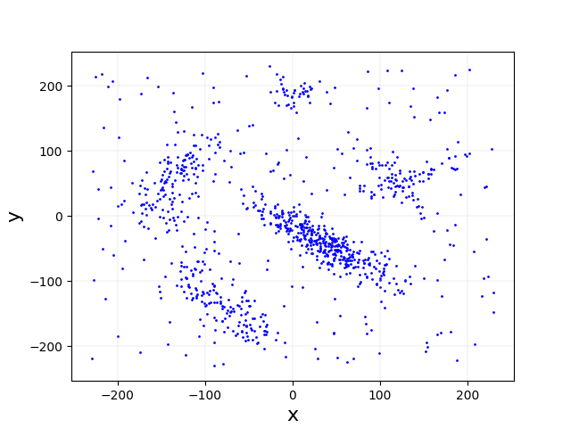
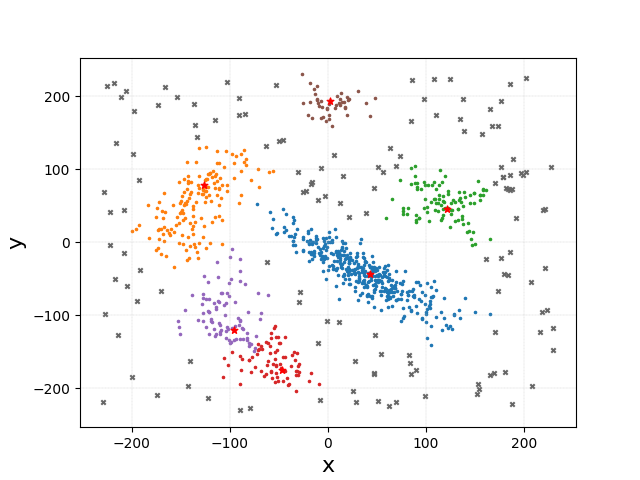

- Generated by
 1.13.2
1.13.2
|
CLUEstering
High-performance density-based weighted clustering library developed at CERN
|
In this section we see how to write minimal code that clusters data using CLUEstering.
Below is a simple C++ code snippet, which can also be found, along with the CMake file for build, in the examples folder of the repository:
The first step is to create the Queue object. A Queue can be thought as a std::thread or as a stream of CUDA/HIP, and represents a queue of operations to be executed on a specific device. The queue will be used to allocate memory and to launch the kernels on the device. The clue::get_queue function provides a convenient way to obtain a queue from a specific device, whose index is to passed as an argument. Alternatively, the clue::get_device function can be used to obtain a device object, repcresenting an accelerator device, which can be then used to create a queue:
The next step is to create the containers for the device points. CLUEstering provides the clue::PointsHost and clue::PointsDevice containers, representing respectively data allocated on the host and on the device. Here the data is read from a CSV file using the clue::read_csv function, which returns a PointsHost object, and then an empty PointsDevice object is created.
Then, the clue::Clusterer, which is the object that handles the internal allocations and contains the algorithm logic, is created. The Clusterer requires the CLUE algorithm's parameters to be passed. Their meaning is explained in the introduction section, along with a description of the algorithm.
Finally, the algorithm is launched with the make_clusters method, which takes as arguments the host and device points, the kernel to use for the clustering, the queue to use for the operations and the bloch size. The input data is copied from the host to the device container, the algorithm is then executed on the device, where the results are computed and finally copied back to the host container.
The results of the clustering can then be read from the host points: the clue::PointsHost::clusterIndexes method returns a span of integers representing the cluster index for each point, while the clue::PointsHost::isSeed method returns a boolean array indicating which points are the seeds of the clusters.
In order to compile code that uses CLUEstering, three steps are needed:
wget git submodule, CMake FetchContent or similar) or by installing it getting the path with CMake find_package command.Here is a full example of a CMake file that compiles the code above:
Here is a minimal example of a Python code using CLUEstering:
Just like in the C++ interface, the CLUEstering.clusterer constructor just takes the CLUE's parameters as arguments. The parameters can also be updated using the CLUEstering.clusterer.set_params method. The data is read using the CLUEstering.clusterer.read_data method, that accepts five types of data formats: pandas DataFrames, Python lists, Numpy arrays, Python dictionaries and strings containing paths to CSV files. The algorithm is run with the CLUEstering.clusterer.run_clue method. The backend used for running the algorithm can be specified by passing a string to run_clue:
NOTE: the support for the SYCL backends is still in an experimental state and is not included in the Python interface as of version 2.6.5.
The results of the clustering can be accessed with the clsuter's public getters:
the output dataframe can also be exported to a CSV file with the CLUEstering.clusterer.to_csv method.
Finally, the clusterer provides the CLUEstering.clusterer.input_plotter method for plotting the input data and the CLUEstering.clusterer.cluster_plotter method for plotting the clustered data.


To finish this section, we describe what is the expected format for the data passed to CLUEstering.
When the data is passed from a CSV file, each row should contain the data for each point, by putting in order the coordinates and then the point's weight. In the header, the coordinates should be labelled as x*, going from 0 to N-1 where N is the number of dimensions, and at the end the weight column should be called weight. Below is an example:
clue::PointsHost and clue::PointsDeviceThe host and device containers in the C++ interface expect data to be passed in an SoA format, meaning that the coordinate values of all the points in each dimension should be adjacent in memory. The difference between an SoA layout and a traditional AoS layout is shown in the diagram below.
If the is already contained in external containers, these can be passed to the clue::PointsHost constructor either as pointers, std::spans or any container satisfying the std::contiguous_range concept. The data can be passed through either two or four buffers:
is_seed map.As said above, the CLUEstering.clusterer.read_data method takes input data in five different formats: